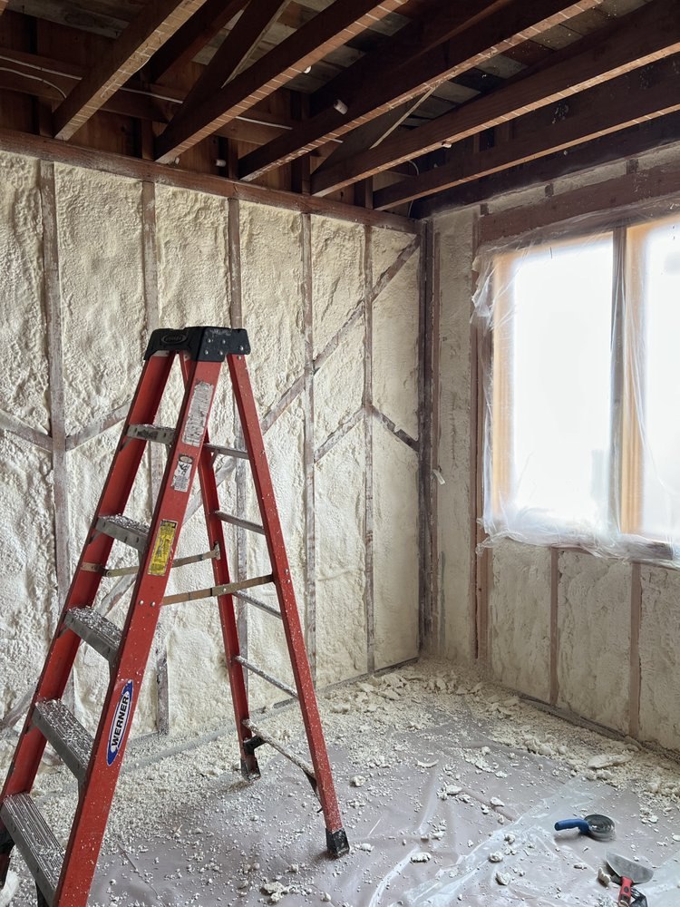

Rodent Proofing
Rodent Proofing in Bay Area
Rodents don't just damage your insulation — they contaminate it. We seal every entry point with materials they can't chew through.

What Is It
Seal Every Entry Point They Use
A systematic inspection and sealing process that closes off every way rodents can get into your attic or crawl space — using steel mesh, metal flashing, and other chew-resistant materials at vents, pipe penetrations, eaves, and foundation gaps.
When You Need It
Scratching or scurrying sounds in the attic or walls
Droppings, nesting material, or a persistent odor in the attic
Visible chew marks on wiring, ductwork, or wood framing
You've had rodent problems before and want to prevent them from returning
How We Do It
Four Steps, No Surprises
Free Inspection
We walk the exterior and attic to identify every current and potential entry point before quoting.
Sealing
Steel mesh and metal flashing installed at vents, gaps, pipes, and foundation openings — materials rodents can't chew through.
Verification
Each sealed point checked to confirm it's fully secured before we move on.
Walkthrough
We show you exactly what was sealed and where — so you know what was done and why.
FAQ
Common Questions About Rodent Proofing
Still Have Questions?
Listen for movement sounds (especially at night), check for droppings or gnaw marks, and watch for a persistent musty odor. If you notice any of these, it's worth scheduling a free inspection.
Yes — ask us about our workmanship guarantee on sealed entry points during your estimate.
Our focus is sealing entry points and, where needed, removing contaminated insulation. For active rodent removal, we can advise or coordinate with a pest control partner.
Keep rodents out for good.
Get a free, no-pressure estimate. We inspect your attic and give you a clear picture — whether you need us or not.
Get Free Estimate